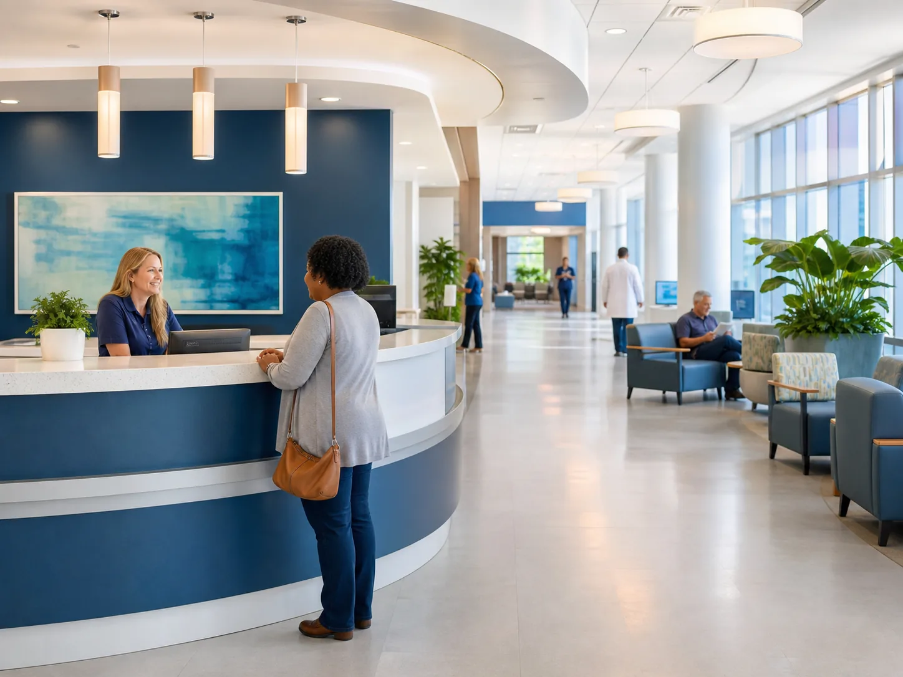

Appointment requests collect contact information, care needs, and a short visit reason so the team can route patients faster.
Hospital care with clear next steps
FortunatoCare
Coordinated care for patients, families, employers, and community partners. Find the right service, request an appointment, meet the care team, and access your patient workspace from one polished healthcare site.
24/7
urgent support routing
12+
care departments
1 hub
for patients and partners

One connected care experience
Built for patients and professional partners.
FortunatoCare organizes the hospital experience into clear pages, practical forms, and focused care pathways so visitors can act quickly without searching through a crowded one-page layout.
Services, doctors, about information, contact details, and portal access now live on separate pages that feel easier to browse.
Employer wellness, occupational health, and partner referrals are presented with the same clarity as everyday patient services.
Patient Portal
Create an account, verify access, and sign back in.
The patient workspace gives returning visitors a focused place to review saved contact details, appointment reminders, care tasks, and account status.
Today
2 care reminders
Appointment
Primary care follow-up
Pending scheduling confirmation
Care Task
Update insurance details
Recommended before the visit
Portal Status
Account access available
Create an account or sign in from the portal page
For organizations
Healthcare support for teams, campuses, and local partners.
FortunatoCare is structured to serve more than individual visits. The site now gives companies and partner organizations a clearer path to preventive care, employee wellness, and referral support.
- Employer wellness visits and preventive screening coordination.
- Occupational health guidance for return-to-work and injury follow-up.
- Referral-friendly service pages for community clinics and partner groups.
Care that feels organized
Every major action has its own place.
Patients can browse services, learn about the hospital, review doctors, contact the team, and manage portal access without being dropped into one long scrolling page.